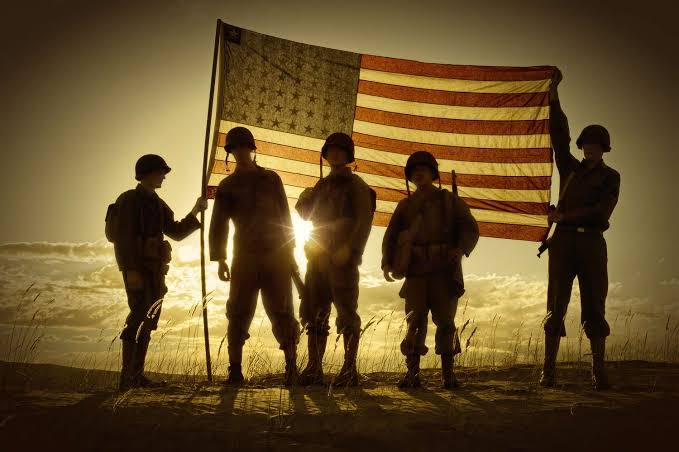

Supporting the Regional Veteran Community Through Direct Economic Action, Tactical Field Operations, and Dignity Loops.
The California Clean Slate Program is committed to supporting our community's veterans by creating direct, meaningful economic opportunities. We recognize the immense value, dedication, and operational excellence that members of the regional veteran community bring to local initiatives. Our Frontline Fellowship program is designed to keep local veterans at the forefront of our community stabilization and mobile hygiene logistics operations.
Direct Field Deployments • Santa Cruz Base
Are you a local veteran looking for flexible, paid work that makes an immediate impact? We invite you to explore our open operational roles.
We offer flexible community deployment shifts managing our mobile hygiene logistics and executing street-level engagement. Traditional multi-week employment structures and traditional banking processes create barriers for those facing survival hurdles. We cut through the red tape: our fellowship framework is designed specifically for an immediate, mission-driven environment.
Help us fund direct economic opportunities for local veterans who are making a tangible difference in our shared community spaces. Through our **Sponsor a Vet for a Day** initiative, 100% of your targeted contribution goes directly into our fellowship workforce pool to compensate a veteran outreach specialist for their time on the ground.
Sponsors an essential half-shift field stipend for a veteran outreach specialist driving mobile operations.
Fully sponsors a local veteran outreach coordinator to manage a complete full day of field logistics.
Secures a comprehensive week-long block of tactical mobile hygiene and community stabilization shifts.